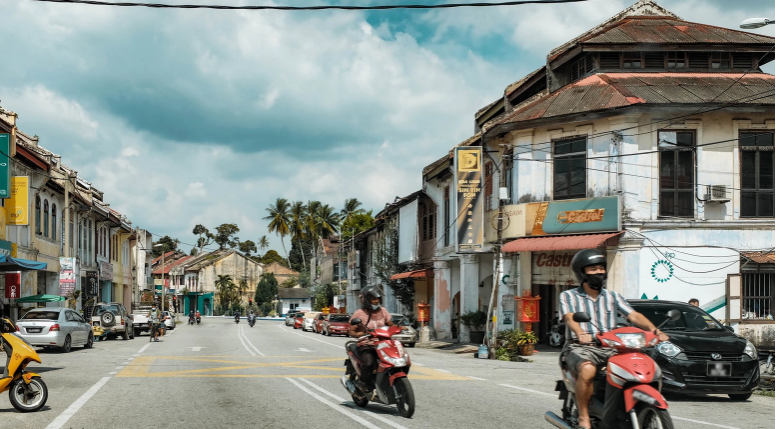

HISTORY OF PAPAN VILLAGE
The Papan Village has significantly lost its liveliness, making it hard to envision its previous state. During the weekdays, the town gives the impression of being deserted. Prior to the shift of Papan Village to a tin mining sector, its main economic activity revolved around timber, specifically the extraction of chengal wood. In Malay, the phrase "paman" denotes a wooden board. Papan had surpassed Taiping in terms of development during a certain period. As a consequence, Taiping earned the nickname "small Perak," whereas Big Perak became known as "big Perak." Nevertheless, in 1911, Papan Village was decimated by a highly devastating fire. Following that, it never totally recovered from the harm. Indeed, Papan Village has a history of experiencing a tremendous amount of disaster. This category encompasses radiation contamination stemming from a rare earth mining operation conducted in the early 1980s.
PAPAN VILLAGE TODAY
Currently, the majority of residents in Papan Village are of Chinese ancestry. Individuals from diverse ethnicities migrated to Pusing, Tronoh, and Batu Gajah, which are nearby locations. Visitors will have an easier time exploring the hamlet thanks to the signs that have been installed by the head of the Papan Heritage Conservation Group. The town is open to visitors from 11:00 AM to 7:30 PM on most days. At 8:30 in the morning and 8:00 in the evening, it is open on Saturdays.